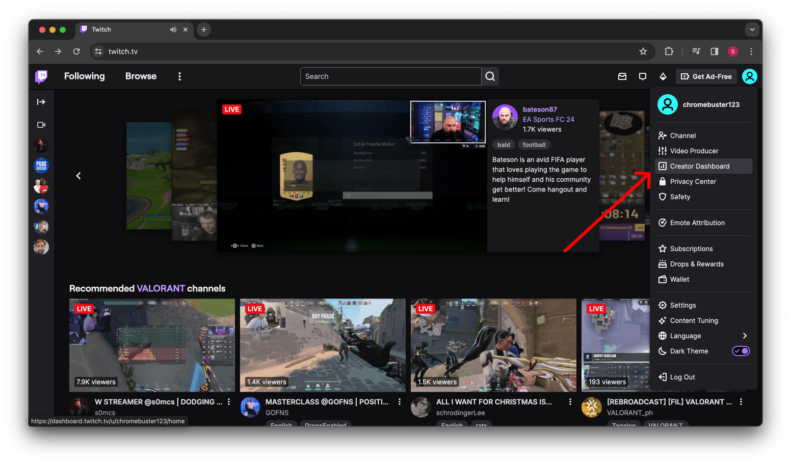

Navigate to your Twitch profile and select "Creator Dashboard".
How to Live Stream on Twitch with Screen Recorder
Welcome to Screen Recorder, Let’s get started with a step-by-step guide to unlock your streaming potential.
Step 1: Click on Profile and Click on Creator Dashboard

Step 2: Go to Settings and Click on Stream
In the Creator Dashboard, go to "Settings" and click on "Stream".
Step 3: Copy Primary Stream Key
Copy your Primary Stream Key from this page.
Step 4: Paste the Primary Stream Key into our app
Paste the copied Stream Key into the Screen Recorder app, then click Next and start streaming.

Step 5: Click on Stream Manager and See Live Broadcasting
In your Twitch Dashboard, click on "Stream Manager" to monitor your live stream.